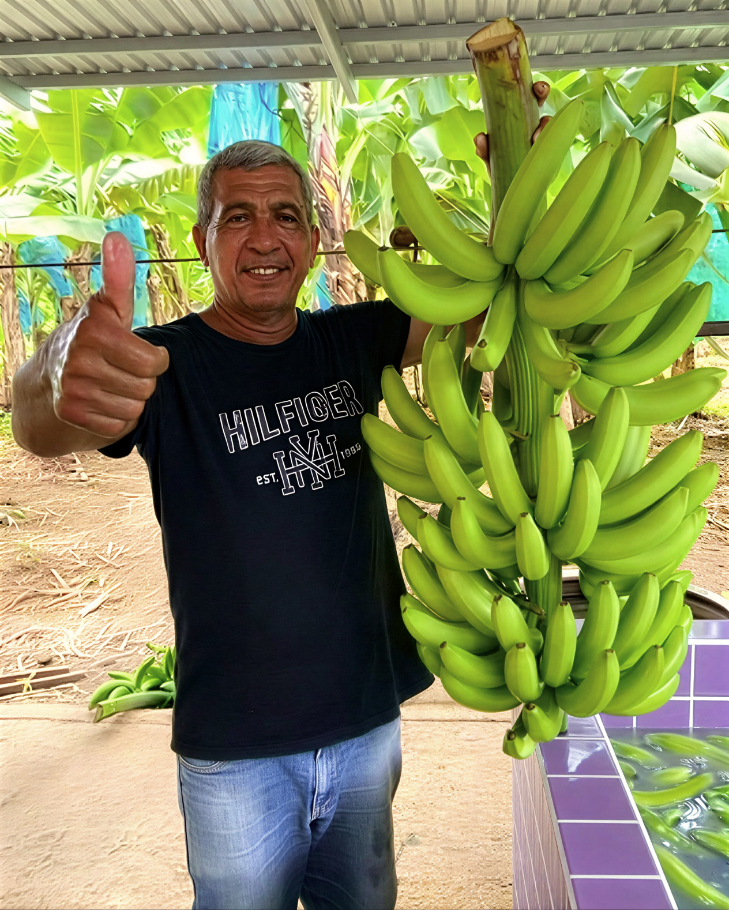

Nuestra Historia
Del Campo Company nace en la región de Urabá Antioquia como una iniciativa familiar dedicada a la producción y comercialización de productos agrícolas.
Nuestro objetivo es llevar frutas frescas de alta calidad a los mercados nacionales, generando empleo, crecimiento económico y desarrollo sostenible en la región.
La empresa se especializa principalmente en la producción y distribución de banano, plátano y coco, trabajando con procesos de selección y postcosecha que garantizan la calidad del producto.
